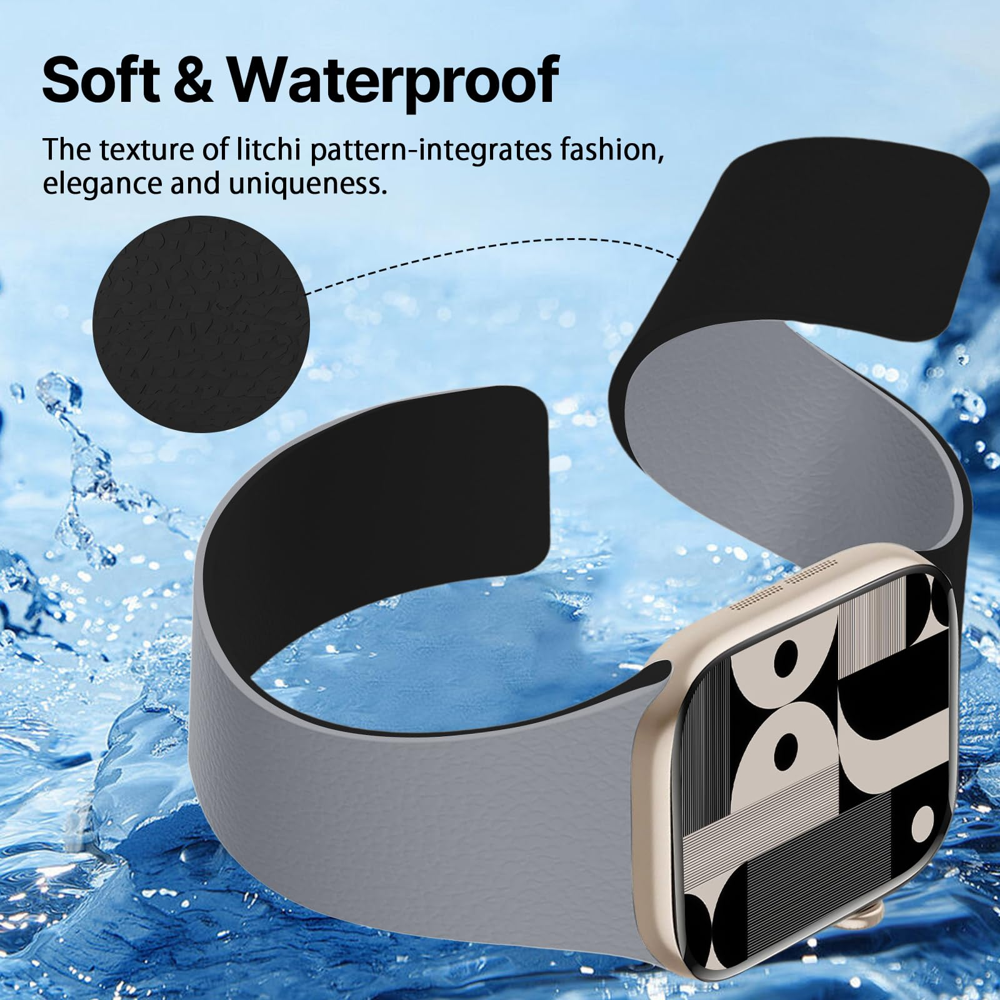
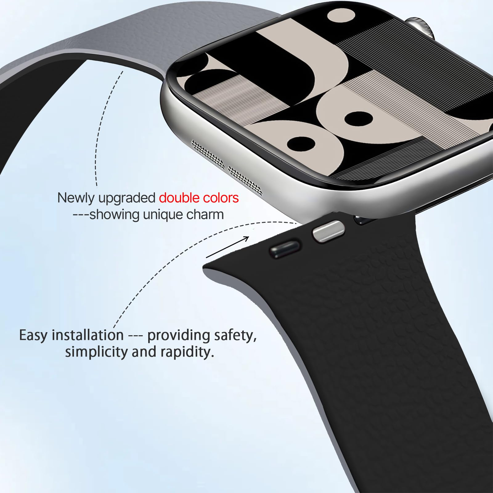
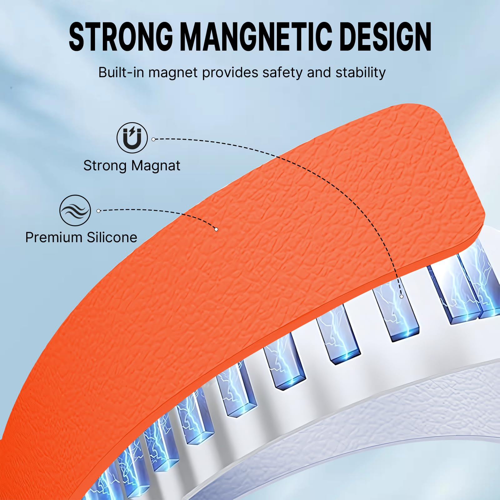
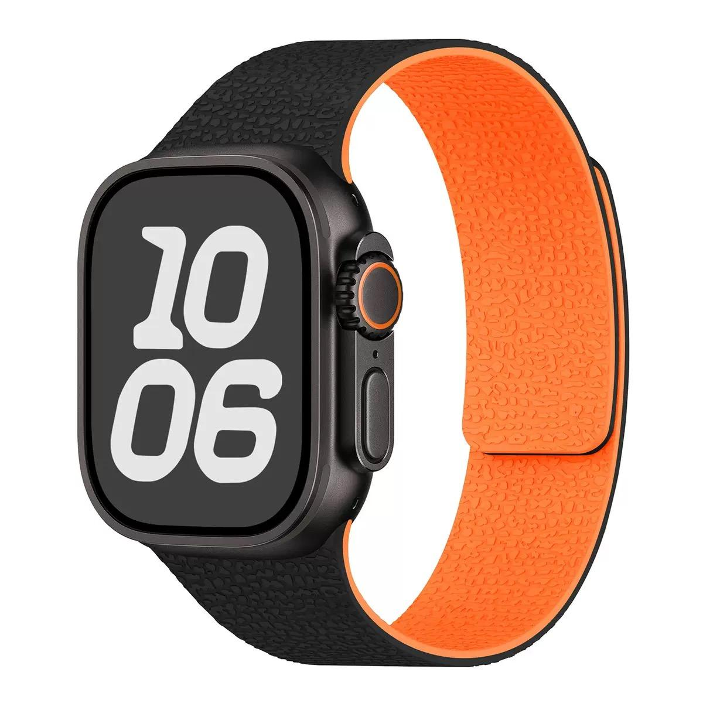
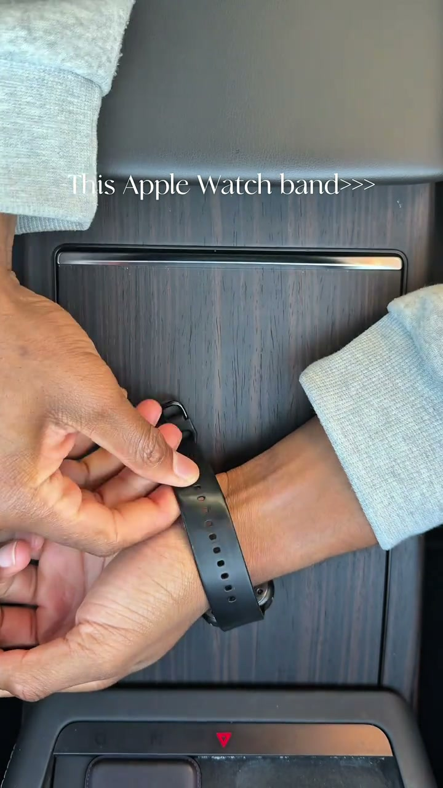
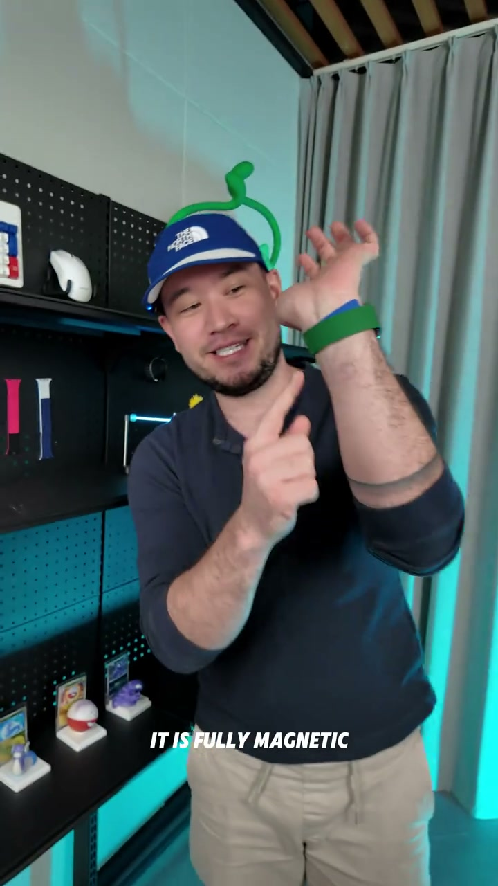
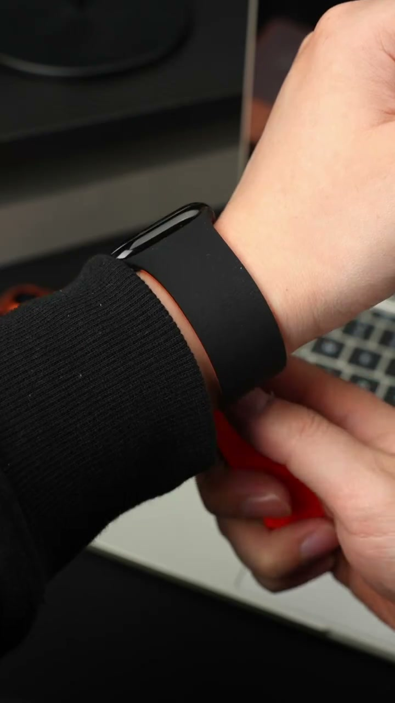

Creator Collaboration Brief
No-Hole Magnetic Band, Instant Summer Style Upgrade
Show how one magnetic two-tone band makes daily wear easier, softer, and gives an old watch a fresher summer look.




Key Selling Points
How to film the first 3 seconds
Lead with a visual problem and solve it instantly with the magnetic fit-and-adjust moment.



Content Production Sequence
Make it feel like a creator execution checklist: problem, proof, comfort, outfit, trust, conversion.
Opening Hook
Wear Demo
Comfort Proof
Style Upgrade
Trust Reminder
Conversion
Restricted Wording
You can say
- compatible with Apple Watch
- smart watch case
Do not say
- This is an Apple watch case
Product-specific notes
Keep the main content brand-light. Use "watch band" or "strap" often. Do not imply the watch/device is included, do not claim official Apple affiliation, and avoid saying it can never come off.
Creator Deliverable Checklist
Film a vertical 8-26 second demo with the magnetic fit shown in the first three seconds. End with: "If your current one still feels boring, this is such an easy upgrade. Tap the product link and choose your color."